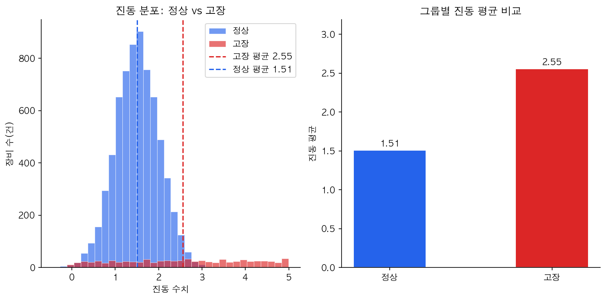
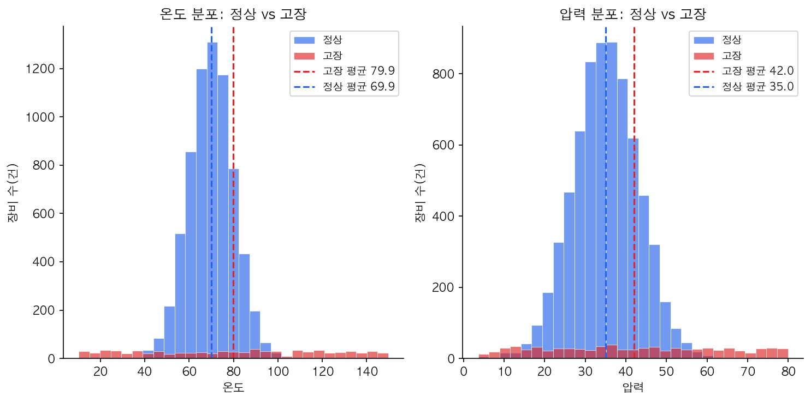
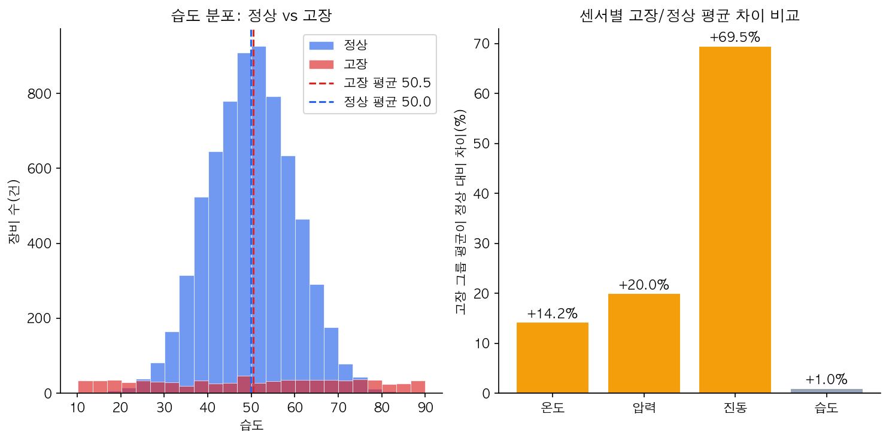
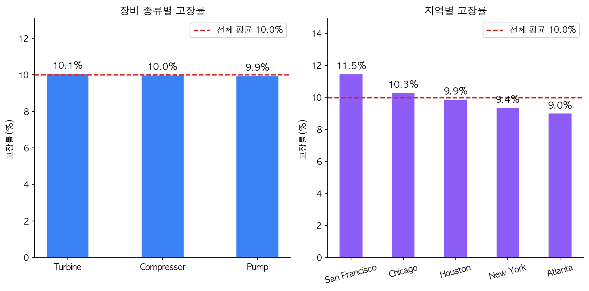
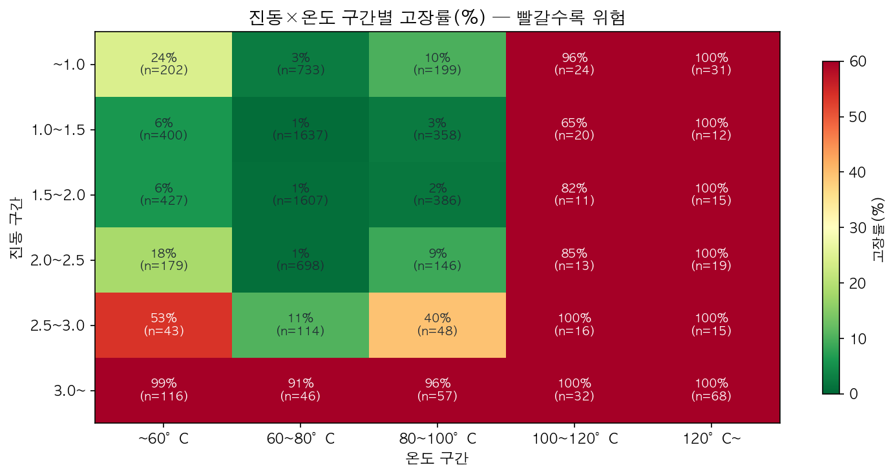
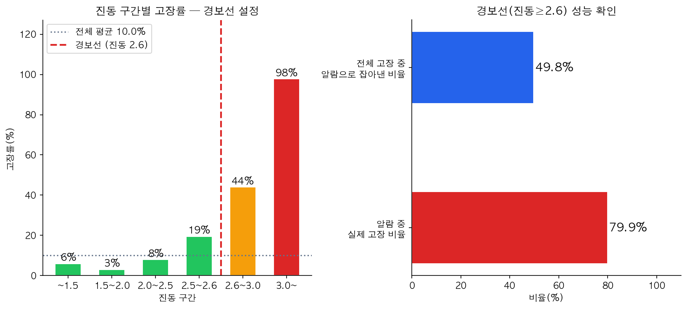

진동·온도·압력·습도 센서 7,672건을 분석해 "경보를 울려야 하는 기준값"을 데이터로 찾아냅니다.
공장 라인이 갑자기 멈추면 큰 손해가 납니다. 센서값을 보고 "이 장비, 곧 고장 날 것 같다"고 미리 알 수 있다면 계획 정비로 손실을 줄일 수 있습니다.
분석 전에 "아마 이럴 것이다"라고 미리 생각한 것들입니다. 데이터가 맞다고 해주면 채택, 아니면 기각합니다.
| # | 가설 | 확인 방법 | 예상 결과 |
|---|---|---|---|
| 1 | 고장 난 장비는 진동이 높을 것이다 | 정상/고장 그룹의 진동 분포 비교, 평균 비교 | 채택 예상 |
| 2 | 온도·압력이 높을수록 고장이 많을 것이다 | 정상/고장 그룹의 온도·압력 분포 비교 | 부분채택 예상 |
| 3 | 습도도 고장과 관련 있을 것이다 | 정상/고장 그룹의 습도 분포 비교 | 기각 예상 |
| 4 | 특정 장비 종류나 지역에서 고장이 많을 것이다 | 장비별·지역별 고장률 막대그래프 | 기각 예상 |
| 5 | 진동도 높고 온도도 높으면 고장률이 급증할 것이다 | 진동×온도 구간별 고장률 색상 표 | 채택 예상 |
어떻게 확인했나
정상 장비(파란색)와 고장 장비(빨간색)의 진동값이 얼마나 펼쳐져 있는지 막대(히스토그램)로 겹쳐 그린 뒤, 두 그룹의 진동 평균값을 직접 비교했습니다.

무엇이 보이나
그래서?
히스토그램을 보면 파란 막대(정상)는 주로 0~2.5 구간에 몰려 있고, 빨간 막대(고장)는 2.5 이상에서 두드러지게 나타납니다. 두 그룹의 분포가 명확하게 갈라지므로 진동은 고장을 예측하는 가장 강력한 신호입니다. 가설을 채택합니다.
어떻게 확인했나
온도와 압력 각각에 대해 정상·고장 그룹의 분포를 히스토그램으로 그리고, 평균값을 점선으로 표시해 두 그룹이 얼마나 차이 나는지 확인했습니다.

무엇이 보이나
그래서?
온도와 압력 모두 고장 그룹이 더 높습니다. 그러나 두 그룹의 히스토그램이 넓게 겹쳐져 있어서, 온도 혼자 또는 압력 혼자로는 "이 장비가 고장날 것이다"라고 딱 잘라 말하기 어렵습니다. 진동처럼 뚜렷하게 갈라지지는 않지만 차이는 분명 존재합니다. 가설을 부분채택합니다 — "관련은 있지만 단독 경보 기준으로는 부족하다"는 의미입니다.
어떻게 확인했나
왼쪽에 습도 분포 히스토그램을, 오른쪽에 센서 4개(온도·압력·진동·습도)의 고장/정상 평균 차이를 한눈에 비교하는 막대그래프를 그렸습니다.

무엇이 보이나
그래서?
히스토그램에서 파란 막대와 빨간 막대가 거의 완벽하게 겹칩니다. 고장난 장비나 정상 장비나 습도값이 사실상 같습니다. 가설을 기각합니다. 이것은 중요한 발견입니다 — "습도 센서는 고장 경보에 쓸모없다"는 사실을 확인했기 때문에, 우선순위를 진동·온도에 집중할 수 있습니다.
어떻게 확인했나
장비 종류(Compressor·Turbine·Pump) 3가지와 도시 5곳 각각의 고장률(%)을 막대그래프로 그렸습니다. 빨간 점선은 전체 평균(10.0%)입니다.

무엇이 보이나
그래서?
모든 막대가 평균선(빨간 점선) 주변에 몰려 있습니다. 가설을 기각합니다. 이 발견은 매우 중요한 시사점을 줍니다 — "어떤 특정 공장이나 장비 종류가 나쁜 것이 아니라, 모든 장비에서 비슷하게 고장이 난다." 즉, 특정 라인만 집중 점검해서는 효과가 없고, 센서 수치 기반의 전 라인 동일 기준이 필요합니다.
어떻게 확인했나
진동을 6구간, 온도를 5구간으로 나눠 각 칸에 해당하는 장비들의 고장률을 계산했습니다. 색상이 빨갈수록 고장이 많은 위험 구간입니다.

무엇이 보이나
그래서?
히트맵의 오른쪽 아래(진동 높음 + 온도 높음)가 가장 붉게 표시됩니다. 진동이 낮더라도 온도가 높으면 고장 위험이 올라가고, 두 조건이 겹치면 고장 위험이 급격히 커집니다. 가설을 채택합니다. 이 패턴은 곧 이어질 "경보 기준 만들기"에서 보조 경보 조건으로 활용합니다.
검증 결과를 바탕으로 실제로 사용할 수 있는 경보 기준을 만듭니다.
진동 구간별 고장률로 경보선 찾기
진동값을 여러 구간으로 나눠 각 구간에서 고장이 몇 %나 발생하는지 확인합니다. 고장률이 갑자기 뛰어오르는 지점이 경보선의 후보입니다.

| 진동 구간 | 장비 수 | 고장 건수 | 고장률 | 상태 |
|---|---|---|---|---|
| ~1.5 | 3,616건 | 213건 | 5.9% | 정상 범위 |
| 1.5 ~ 2.0 | 2,446건 | 74건 | 3.0% | 정상 범위 |
| 2.0 ~ 2.5 | 1,055건 | 83건 | 7.9% | 주의 관찰 |
| 2.5 ~ 2.6 | 77건 | 15건 | 19.5% | ⚠️ 주의 |
| 2.6 ~ 3.0 | 159건 | 70건 | 44.0% | 🚨 경보 구간 |
| 3.0 이상 | 319건 | 312건 | 97.8% | 🚨 위험 구간 |
진동 2.5~2.6에서 19.5%, 진동 2.6~3.0에서 44.0%로 고장률이 급격히 올라갑니다. 따라서 진동 2.6을 1차 경보선으로 제안합니다.
경보선(진동 ≥ 2.6) 성능 확인
이 경보선은 "울리면 거의 틀림없다"는 장점이 있습니다. 대신 고장의 절반 정도는 진동이 2.6 미만이라 이 알람만으로는 감지되지 않습니다. 이를 보완하기 위해 아래 보조 경보를 함께 사용합니다.
보조 경보 — 복합 조건으로 놓치는 고장 줄이기
가설 5(진동×온도 히트맵)에서 진동이 2.0~2.6이더라도 온도가 높으면 고장률이 급등하는 것을 확인했습니다. 이를 보조 경보로 활용합니다.